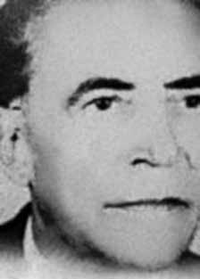

Divo
Fernandes
D’
Oliveira
CIRCUNSTÂNCIAS DA MORTE
Divo Fernandes D’Oliveira teria sido morto por agentes do Estado brasileiro em circunstâncias que, até a presente data, não foram esclarecidas. Apesar dos esforços dos pesquisadores da Comissão Nacional da Verdade não foi possível elucidar como se deu o desaparecimento de Divo, a partir do presídio Lemos Brito, entre o final de 1964 e o início de 1965. No dia 13 de março de 1964, Divo Fernandes juntou-se às milhares de pessoas que participaram do Comício da Central do Brasil, no qual o então presidente da República, João Goulart, defendeu com veemência as reformas de base. Com o advento do golpe de 1º de abril de 1964 e a consequente radicalização das tensões políticas, Divo Fernandes passou a enfrentar uma série de dificuldades. Pouco tempo depois, Divo foi preso no Rio de Janeiro e enviado ao presídio Professor Lemos Brito. De posse dessa informação, a esposa de Divo, Nayde Medeiros, deslocou-se para o Rio, com o intuito de visitar o marido. De acordo com relato apresentado por dona Nayde, a visita ocorreu em meados de 1964. De volta a Criciúma, dona Nayde, que era professora do grupo escolar Coelho Neto, enfrentou dificuldades econômicas, as quais a impossibilitaram de voltar ao Rio ainda em 1964. O retorno só foi possível no ano seguinte; entretanto, ao chegar ao presídio, recebeu a informação de que Divo havia desaparecido da prisão. Inconformada com a situação, ela iniciou verdadeira peregrinação pelos presídios, hospitais e cemitérios do Rio de Janeiro. Até a data de sua morte, em maio de 1975, Nayde Medeiros nunca recebeu nenhuma explicação para o desaparecimento de seu marido. Até a presente data, Divo Fernandes D’Oliveira permanece desaparecido.
Divo Fernandes D’Oliveira was allegedly killed by agents of the Brazilian State in circumstances that, to date, have not been clarified. Despite the efforts of researchers from the National Truth Commission, it was not possible to elucidate how Divo's disappearance occurred from the Lemos Brito prison, between the end of 1964 and the beginning of 1965. On March 13, 1964, Divo Fernandes joined the thousands of people who participated in the Central do Brasil Rally, in which the then President of the Republic, João Goulart, vehemently defended basic reforms. With the advent of the coup of April 1, 1964 and the consequent radicalization of political tensions, Divo Fernandes began to face a series of difficulties. Shortly afterwards, Divo was arrested in Rio de Janeiro and sent to the Professor Lemos Brito prison. Armed with this information, Divo's wife, Nayde Medeiros, traveled to Rio, with the intention of visiting her husband. According to a report presented by Dona Nayde, the visit took place in mid-1964. Back in Criciúma, Dona Nayde, who was a teacher at the Coelho Neto school group, faced economic difficulties, which made it impossible for her to return to Rio in 1964. The return was only possible the following year; however, upon arriving at the prison, he received information that Divo had disappeared from prison. Unsatisfied with the situation, she began a true pilgrimage through the prisons, hospitals and cemeteries of Rio de Janeiro. Until the date of her death, in May 1975, Nayde Medeiros never received any explanation for her husband's disappearance. To date, Divo Fernandes D’Oliveira remains missing.
Divo Fernandes D’Oliveira habría sido asesinado por agentes del Estado brasileño en circunstancias que, hasta la fecha, no han sido esclarecidas. A pesar de los esfuerzos de los investigadores de la Comisión Nacional de la Verdad, no fue posible dilucidar cómo se produjo la desaparición de Divo de la prisión de Lemos Brito, entre finales de 1964 y principios de 1965. El 13 de marzo de 1964, Divo Fernandes se unió a las miles de personas que participaron en la manifestación Central do Brasil, en la que el entonces presidente de la República, João Goulart, defendió con vehemencia reformas básicas. Con la llegada del golpe de Estado del 1 de abril de 1964 y la consiguiente radicalización de las tensiones políticas, Divo Fernandes comenzó a afrontar una serie de dificultades. Poco después, Divo fue detenido en Río de Janeiro y enviado a la prisión Profesor Lemos Brito. Armada con esta información, la esposa de Divo, Nayde Medeiros, viajó a Río, con la intención de visitar a su marido. Según un informe presentado por doña Nayde, la visita se produjo a mediados de 1964. De regreso a Criciúma, doña Nayde, que era profesora del grupo escolar Coelho Neto, enfrentó dificultades económicas que le imposibilitaron regresar a Río en 1964. El regreso sólo fue posible al año siguiente; sin embargo, al llegar al penal recibió información de que Divo había desaparecido de prisión. Insatisfecha con la situación, inició una verdadera peregrinación por las cárceles, hospitales y cementerios de Río de Janeiro. Hasta la fecha de su muerte, en mayo de 1975, Nayde Medeiros nunca recibió explicación alguna por la desaparición de su marido. Hasta la fecha, Divo Fernandes D’Oliveira sigue desaparecido.